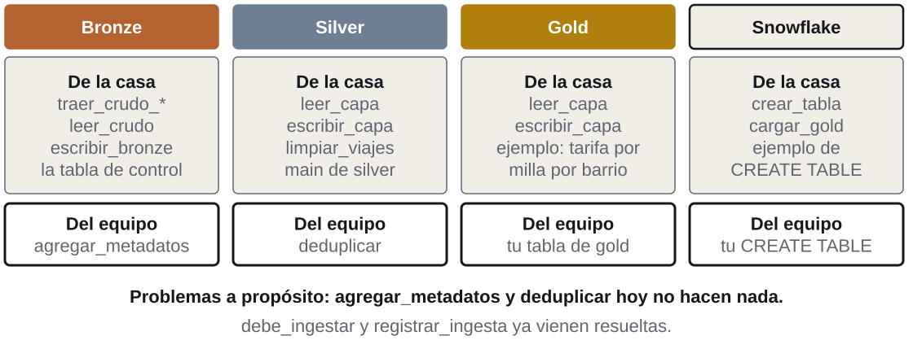

Big Data e Ingeniería de Datos
Clase 7 · Un pipeline completo en dev y cómo prepararlo para prod (versión corta)
Posgrado UdeM · 23 nov 2026
Versión corta de la clase 7: 40 slides en lugar de 133, con el mismo orden, los mismos temas y los mismos diagramas. Cada título es una frase que continúa la anterior, así que leídos de corrido cuentan la clase entera. Las instrucciones paso a paso están condensadas: lo que no cabe en la slide está en estas notas. Antes de la clase, cada persona migró su cuenta (curso/clase07/README.md) y dejó abierto el Code Editor con una terminal; si el Space se apagó, se enciende con Run space. Secuencia: aclarar lo que cambia respecto a las clases 5 y 6; dónde corre cada cosa; empezar limpios; construir y probar las funciones en el Notebook 1, que es tu banco de trabajo; pasarlas a los .py; correr las tareas del DAG una por una con Athena entre cada una; el DAG completo y los duplicados; make correr y el dimensionamiento; y dejarlo listo para llevarlo a prod con un pull request en la clase 8. Hoy el trabajo es individual y la única ayuda es el instructor. Tiempo: 1 min. Siguiente: ¿Cómo construyo un pipeline en dev, lo llevo a prod sin duplicar nada y sé cuánto cómputo necesita?
¿Cómo construyo un pipeline en dev, lo llevo a prod sin duplicar nada y sé cuánto cómputo necesita?
Caso del curso: ¿la lluvia cambia los viajes en NYC?
Problema: en las clases 5 y 6 cada persona escribió funciones que corrían en su máquina. Un pipeline de verdad corre en la nube, lo ejecuta un programa y no una persona, y a veces se repite: por un fallo, por un reproceso o por una prisa. Si esa repetición duplica filas, cualquier suma queda inflada y nadie recibe un error. Pide a dos personas que digan qué puede salir mal cuando el mismo mes se procesa dos veces y anota las respuestas en una hoja visible: duplicados, cifras infladas, costo, prod contaminado desde dev. Conversación de 2 min. Tiempo: 3 min. Siguiente: Hoy construimos y probamos un pipeline en dev; en la clase 8 lo llevamos a prod.
Hoy construimos y probamos un pipeline en dev; en la clase 8 lo llevamos a prod

Cambiar de Spark en el Code Editor a Glue es cambiar solo el cómputo.
Problema: hoy mezclamos varias herramientas (un notebook, make, Airflow, Athena, GitHub) y sin un mapa cada una parece suelta. Este diagrama las coloca sobre una sola línea. Las fuentes (viajes, zonas, clima) entran a cuatro pasos. Bronze guarda cada fuente tal como llega. Silver es el espejo limpio de cada fuente, sin join. Gold responde una pregunta de negocio. Snowflake recibe la tabla de gold para consultarla con SQL. Arriba está la tabla de control, BIGDATA.CONTROL_DEV.WATERMARK en dev y CONTROL_PROD en prod: cada paso le pregunta si ya hizo ese mes y le anota una fila al terminar bien. Cada paso es una función con su nombre (correr_bronze, correr_silver, correr_gold, cargar_snowflake). El cobre es solo de bronze, el gris de silver y el ocre de gold; el azul, solo de la tabla de control. Tiempo: 3 min. Siguiente: Antes de construir, cinco cosas de las clases 5 y 6 cambian.
Antes de construir, cinco cosas de las clases 5 y 6 cambian
Las clases 1 a 6 ya se dictaron y sus notebooks y decks no se reescriben: aquí se aclaran en voz alta. No es un error de nadie: el curso fue construyendo el pipeline por capas y hoy se junta. Además de la tabla: Athena ya no lee tu bronze sino el crudo de dev o prod; el lab ya no corre en Glue sino el código de la casa; en silver, la carpeta fhvhv_trips/pickup_date pasó a fhvhv/mes=; la tabla CONTROL.WATERMARK pasó a CONTROL_DEV y CONTROL_PROD; DAILY_ZONE_METRICS es ahora la tabla de cada equipo; y make muestra y run-local se reemplazan por make correr. Tiempo: 4 min. Siguiente: Antes de seguir, compruebas que tu migración quedó bien.
Antes de seguir, compruebas que tu migración quedó bien
Haz clic en Terminal > New Terminal.
Escribe cd ~/bigdata y presiona Enter.
Escribe make doctor: no debe marcar fallos.
Escribe make rutas ENTORNO=dev: las rutas empiezan con dev.
NOTEBOOK Code Editor · terminal
Dónde: la terminal del Code Editor, con Terminal > New Terminal. make doctor revisa Python, los jars, las credenciales y el entorno, y no debe marcar fallos. make rutas ENTORNO=dev imprime las rutas que usará el pipeline: deben empezar con dev. Si algo falla, se resuelve ahora con el instructor, no a mitad de la clase. Tiempo: 3 min. Siguiente: Dev y prod no comparten carpetas ni esquemas, y dónde corres decide el entorno.
Dev y prod no comparten carpetas ni esquemas, y dónde corres decide el entorno

Terminal, notebook y Airflow del Code Editor: dev. Airflow de la VM: prod.
El bucket tiene dos carpetas separadas, dev y prod, y Snowflake tiene cuatro esquemas: DEV, PROD, CONTROL_DEV y CONTROL_PROD. El Code Editor siempre escribe en dev, DEV y CONTROL_DEV; la VM de Airflow solo escribe en prod, PROD y CONTROL_PROD, y solo después de un pull request y del CI/CD. La regla se resume así: terminal, notebook o make son dev, siempre; el Airflow del Code Editor es dev, siempre; el Airflow de la VM es prod. El rol BIGDATA_DEV no puede escribir en PROD ni en CONTROL_PROD: esa es la barandilla que lo garantiza, y en la clase 8 la probamos. Tiempo: 4 min. Siguiente: Para correr solo cambias pipeline.yaml, y el entorno no aparece porque es automático.
Para correr solo cambias pipeline.yaml, y el entorno no aparece porque es automático
# pipeline.yaml (raíz del repositorio)
computo: code_editor # glue_small | glue_medium | glue_large
limite: "1000" # "1000" | "100000" | "todos"
mes: "2024-01" # AAAA-MM; vacío = config/dev.yaml
reprocesar: false # true = ignora la tabla de control
Lo que escribas en un comando o en el formulario gana sobre este archivo. Pasar a prod no se cambia aquí: va por PR y CI/CD.
pipeline.yaml es la raíz del repositorio y trae cuatro perillas: computo (code_editor o glue_small, glue_medium, glue_large), limite (1000, 100000 o todos), mes (AAAA-MM; vacío usa config/dev.yaml) y reprocesar (true ignora la tabla de control). El entorno no aparece: lo decide dónde corres. Dónde se cambia cada cosa: el límite, el cómputo, el mes y reprocesar, en el yaml, con LIMITE=, COMPUTO=, MES= y REPROCESAR= en make, o en el formulario de Airflow; el entorno no se cambia; pasar a prod se hace por PR, CI/CD y el DAG en la VM; y la lógica solo cambia en bronze, silver y gold. Tiempo: 4 min. Siguiente: Ese mismo paso corre desde un notebook, con make o en Airflow, y solo cambia dónde se calcula.
Ese mismo paso corre desde un notebook, con make o en Airflow, y solo cambia dónde se calcula

Un solo código, tres formas de lanzarlo, dos lugares donde calcular.
Tres formas de lanzar el mismo paso: la función correr_silver en un notebook, make correr PASO=silver en la terminal y la tarea correr_silver del DAG pipeline_taxi. Las tres llaman a la misma función de pipeline/correr.py, que imprime el mismo encabezado y cierre. A la derecha, el cómputo decide dónde se calcula: code_editor, Spark en tu máquina, o un job de Glue. Cambiar de uno a otro es cambiar solo el cómputo. Tiempo: 3 min. Siguiente: Para medir sin restos, empezamos limpios con resetear_entorno, que borra solo dev.
Para medir sin restos, empezamos limpios con resetear_entorno, que borra solo dev
– dev/ en S3, CONTROL_DEV y BIGDATA.DEV.
– Prod, LAKE_GOLD, Athena y code/.
– Horas de Glue y créditos de Snowflake.
NOTEBOOK Airflow del Code Editor
Transición, en voz alta: ahora continuamos con resetear_entorno. Problema: antes de construir nada hay que saber en qué estado está dev. Si quedaron lotes, registros o tablas de una prueba anterior, todo lo que midamos hoy estará contaminado. resetear_entorno es un DAG de Airflow que borra todo el entorno de ese Airflow, con salvaguardas: nace pausado, solo_listar viene marcada, exige escribir borrar dev, y borra primero la tabla de control para que, si algo falla, quede «no procesado» y no «procesado sin datos». No toca prod, el stage LAKE_GOLD, Athena ni code/. Resetear prod cuesta en AWS (bajar y reprocesar el año: horas de Glue), en Snowflake (volver a cargar: créditos) y en reputación (una cifra que desaparece sin aviso). Tiempo: 4 min. Siguiente: Enciendes Airflow, lanzas resetear_entorno para listar y luego para borrar dev.
Enciendes Airflow, lanzas resetear_entorno para listar y luego para borrar dev
Terminal y navegador · Airflow
Ejecuta make airflow-local y entra.
Lanza resetear_entorno con Solo listar marcada.
Otra vez, con Conservar el crudo y borrar dev.
Comprueba seis tareas en verde.
NOTEBOOK Airflow del Code Editor
Paso 1: en la terminal, cd ~/bigdata y make airflow-local; copia la URL que termina en /ports/8080/ y la contraseña, ábrela en una pestaña nueva y entra como admin; en Dags activa pipeline_taxi y resetear_entorno. Paso 2: Trigger con Solo listar marcada y lee el log de contar: dice cuántos objetos, registros de control y tablas va a borrar. Paso 3: Trigger otra vez, desmarca Solo listar, marca Conservar el crudo (el archivo de enero no se vuelve a descargar) y en Confirmación escribe exactamente borrar dev. Seis tareas en verde. El log de contar dice cuántos registros de control, tablas de Snowflake y objetos de S3 va a borrar; esas cifras dependen de lo que haya en tu dev. Error común: «La confirmación no coincide»: se escribió con mayúsculas, con tilde o con otra palabra; debe ser exactamente borrar dev. Tiempo: 7 min. Siguiente: Con dev limpio, construimos las funciones en el Notebook 1, con 1 000 viajes.
Con dev limpio, construimos las funciones en el Notebook 1, con 1 000 viajes
– Cada función, una por una, con 1 000 viajes.
– Sabrás por qué la puerta evita duplicar un mes.
NOTEBOOK 01_construir_paso_a_paso
Transición, en voz alta: ahora continuamos con el Notebook 1. El notebook corre contra el dev de verdad: escribe en s3://<lake>/dev/ y anota en BIGDATA.CONTROL_DEV.WATERMARK. No hay laboratorio ni disco local. Por eso, al terminar, hay que resetear dev otra vez. Elige siempre el kernel Python (bigdata); los kernels Glue PySpark o SparkMagic abren una sesión de AWS Glue que cobra mientras está abierta. Tiempo: 3 min. Siguiente: Copias el notebook y apagas Airflow para ejecutar las Celdas 1 a 8.
Copias el notebook y apagas Airflow para ejecutar las Celdas 1 a 8
# En la terminal del Code Editor (copia el bloque entero):
mkdir -p ~/clase07_mis_notebooks && \
cp ~/bigdata/curso/clase07/01_*.ipynb ~/clase07_mis_notebooks/
cd ~/bigdata && make airflow-local-down
Abre 01_construir_paso_a_paso.ipynb, elige el kernel Python (bigdata) y ejecuta las Celdas 1 a 8: el encabezado muestra rutas s3 de dev y leer_crudo devuelve siempre las mismas 1 000 filas.
NOTEBOOK 01_construir_paso_a_paso
Se copia el notebook a una carpeta propia para que los cambios no entren a un commit por accidente. Se apaga Airflow porque en esta máquina solo cabe un proceso de Spark a la vez: Airflow del Code Editor ocupa buena parte de los 7.6 GB. Celdas 1 a 3: el encabezado dice entorno DEV, cómputo code_editor, paso, mes, límite 1000 y reprocesar false; las líneas Lee y Escribe salen de la misma función de rutas que usa el código y son s3://bigdata-lake-<tu cuenta>-us-east-2/dev/..., lo que prueba que escribimos en el dev de verdad. Celda 4: Spark local con 2 hilos. Celda 5: sube los tres archivos crudos a S3 (unos 450 MB la primera vez). Celdas 6 y 7: leer_crudo aplica el límite de forma determinista, coalesce(1).limit(n), y se comprueba leyendo dos veces: 1000 y True. Un limit suelto de Spark podría traer filas distintas cada vez, y más adelante vamos a comparar reprocesos. Celda 8: zonas 265 y clima 31. Error común: el AVISO «este kernel no es el del proyecto»: se elige Python (bigdata). Tiempo: 6 min. Siguiente: Para no duplicar, cada paso consulta una tabla de control, y la puerta tiene tres casos.
Para no duplicar, cada paso consulta una tabla de control, y la puerta tiene tres casos

Es la misma regla en un notebook, con make, en Airflow, en Glue y en prod.
Problema: si bronze corre dos veces para enero, enero queda dos veces: cada ingesta escribe un lote nuevo y nunca borra los anteriores. Hace falta que el pipeline pregunte antes de trabajar. La respuesta es la tabla de control: una tabla de Snowflake por entorno donde cada paso anota una fila al terminar bien, con la clave (TABLA, CAPA, MES) y las columnas FILAS, LEIDAS, COMPUTO, LIMITE y REPROCESAR; las tres últimas solo informan. La regla es una sola: sin registro, ingesta; con registro, salta, sea cual sea el número de filas, el cómputo o el límite; con reprocesar, ingesta siempre. Reprocesar no borra nada: cada corrida deja su fila. Y el registro se anota al final y solo si el paso terminó bien. Esta regla vale igual en un notebook, con make, en Airflow, en Glue y en prod. Tiempo: 5 min. Siguiente: La puerta se construye con debe_ingestar y con registrar_ingesta, que anota solo después de escribir.
La puerta se construye con debe_ingestar y con registrar_ingesta, que anota solo después de escribir
from pipeline.herramientas.control import mes_ya_procesado
def debe_ingestar(corrida: Corrida, tabla: str, mes: str) -> bool:
ya_esta_registrado = mes_ya_procesado(corrida, tabla, CAPA, mes)
if ya_esta_registrado:
return False
return True
# Se registra al final: si la escritura falla, no queda registro
registrar_ingesta(corrida, tabla, mes, fuente, leidas, filas, inicio)
Ejecuta las Celdas 9 a 17: pruebas los tres casos con meses de 2023, para no tocar enero. Si la escritura se cae, el mes se reintenta.
NOTEBOOK 01_construir_paso_a_paso
Celdas 9 y 10: consultar_control devuelve [] porque ningún paso ha terminado; los ensayos usan meses de 2023 (MES_ENSAYO) porque la tabla de control es la real y una fila de «ya procesado» para enero de 2024 sin datos detrás es justo el error que la tabla debe evitar. Celdas 11 a 13: la primera versión de debe_ingestar solo responde «¿hay registro?»; registrar_ingesta anota la fila de bronze; la clave es la combinación tabla, capa y mes, así que registrar fhvhv no bloquea el clima de enero. Celda 14: una ingesta de mentira que se cae a mitad: con falla=True no queda ningún registro; con falla=False, REGISTRÓ; otra vez, SE SALTÓ. Si hubiéramos registrado al principio, el reintento quedaría bloqueado. Celdas 15 a 17: la versión final invierte mes_ya_procesado, la herramienta de la casa que ya trae la regla completa (con reprocesar, deja pasar sin mirar la tabla); las tres reglas dicen «coincide». Estas dos funciones quedaron como las que trae bronze.py. Tiempo: 7 min. Siguiente: Bronze corre dos veces: registra y salta.
Bronze corre dos veces: registra y salta
Celdas 18 y 19: agregar_metadatos no hace nada.
Celda 20: tres REGISTRÓ (1 000, 265 y 31 filas).
Celda 21 sin cambios: tres SE SALTÓ.
Celdas 22 y 23: una sola carpeta lote=.
NOTEBOOK 01_construir_paso_a_paso
Lo decimos en voz alta: agregar_metadatos debería dejar cinco columnas (_fecha_ingesta, _id_lote, _hash_fila, _fuente y _archivo_origen) y hoy devuelve la tabla tal cual: es un problema a propósito. Consecuencia: bronze guarda las filas sin decir de qué lote vienen y silver no podrá saber qué filas ya vio. Escribirla es parte del trabajo de tu equipo en el Taller. usar_mis_funciones pone nuestras funciones en bronze solo en este proceso. Celda 20: correr_bronze(limite="1000") imprime el encabezado y el cierre por tabla: fhvhv leyó 1 000 y escribió 1 000; taxi_zones 265 y 265; clima 31 y 31; las tres REGISTRÓ, y la línea ESCRIBE termina en lote= y una fecha. Celda 21: la puerta consulta la tabla real, encuentra el registro y no hace nada: SE SALTÓ, sin lote nuevo. Celdas 22 y 23: la fila de control (filas=1000, leidas=1000, code_editor, reprocesar False) y una sola carpeta lote=, a pesar de las dos corridas. Tiempo: 10 min. Siguiente: Silver limpia, gold agrupa por fecha, barrio y franja y divide las sumas, y Snowflake recibe la tabla.
Silver limpia, gold agrupa por fecha, barrio y franja y divide las sumas, y Snowflake recibe la tabla
franja = (F.when(F.hour("pickup_datetime") < 6, "madrugada")
.when(F.hour("pickup_datetime") < 12, "mañana")
.when(F.hour("pickup_datetime") < 18, "tarde").otherwise("noche"))
con_franja.groupBy("fecha", "borough", "franja").agg(
F.count(F.lit(1)).alias("viajes"),
F.sum("distancia_mi").alias("distancia"),
F.sum("total_pagado").alias("ingreso"))
# tarifa_por_milla = round(ingreso / distancia, 2)
Ejecuta las Celdas 24 a 34: silver con uno y con dos lotes, gold y el CREATE TABLE que se imprime.
NOTEBOOK 01_construir_paso_a_paso
Silver es el espejo limpio de bronze, una tabla por fuente y sin join: pone cada columna en su tipo y descarta viajes imposibles con limpiar_viajes, clima_diario y limpiar_taxi_zones. Celdas 24 y 25: con un lote, bronze y silver tienen 1 000 filas (en el ensayo no se descartó ninguno; el archivo de enero completo descarta 13 907 de 19 663 930); empresa dice Uber o Lyft, no HV0003. Celdas 26 y 27: con dos lotes, silver da el doble y deduplicar (la del notebook, igual que la del repositorio) devuelve las mismas filas: es el segundo problema a propósito. Gold responde una pregunta de negocio con una tabla pequeña; la de la casa es ¿a qué hora y barrio se paga más por milla?, y no es la del Taller: la tuya es otra. La tarifa por milla es el cociente de las sumas, no el promedio de las tarifas. Celdas 28 a 31: enriquecer, la franja, la función y la comparación, que dice True. Celdas 32 a 34: para cargar gold hace falta en Snowflake una tabla con los mismos tipos (date DATE, string VARCHAR, bigint NUMBER(38,0), double FLOAT); la Celda 34 solo imprime el CREATE TABLE: el código nunca crea la tabla, la creas tú en Snowsight antes del DAG completo. Tiempo: 12 min. Siguiente: La Celda 35 dice qué cambiaste frente a los .py y la 36 corre las pruebas del equipo.
La Celda 35 dice qué cambiaste frente a los .py y la 36 corre las pruebas del equipo
Celda 35: todo dice igual; DISTINTO sería lo que cambiaste.
Celda 36: 9 PENDIENTE y 9 OK.
NOTEBOOK 01_construir_paso_a_paso
La Celda 35 compara el código de cada función del notebook con el del .py (firma y código) y el texto del CREATE TABLE: hoy dice igual en todas, porque las funciones del notebook son las que trae el repositorio. Cuando cambies una, dirá DISTINTO: esa es la que hay que copiar al .py. La Celda 36, probar_mis_funciones, pone las funciones del notebook un instante en los módulos del pipeline, corre las pruebas del equipo, imprime una línea por prueba (OK, PENDIENTE o FALLA) y deja todo como estaba: 9 PENDIENTE (cinco de agregar_metadatos y cuatro de deduplicar) y 9 OK; las PENDIENTE son los dos problemas dichos en voz alta. El notebook es tu banco de trabajo: ahí se cambia una función, se prueba con 1 000 viajes y recién entonces se copia. La Celda 37 apaga Spark para liberar la memoria, porque make test y los demás comandos abren el suyo. Tiempo: 5 min. Siguiente: Abre bronze.py y silver.py: es la misma función del notebook.
Abre bronze.py y silver.py: es la misma función del notebook
# src/pipeline/bronze.py · y en el notebook, Celda 18
def agregar_metadatos(df, fuente, archivo_origen, id_lote, fecha_ingesta):
# PENDIENTE(equipo): hoy devuelve df tal cual
return df
# src/pipeline/silver.py · y en el notebook, Celda 27
def deduplicar(df):
# PENDIENTE(equipo): hoy devuelve df tal cual
return df
Misma firma y mismo cuerpo que en el notebook: por eso pasar una función es copiarla completa. Busca PENDIENTE(equipo) con Ctrl + F.
NOTEBOOK Code Editor · bronze.py
Problema: las funciones que probamos en el Notebook 1 tienen que vivir en los .py, porque el pipeline corre desde ahí. Ya están: en el explorador, bigdata > src > pipeline > bronze.py y silver.py; Ctrl + F y PENDIENTE(equipo) encuentra una vez agregar_metadatos y una vez deduplicar. Misma firma y mismo cuerpo que las Celdas 18 y 27 del notebook, y la Celda 35 lo comprobó con «igual». Los dos dicen return df: son los dos problemas a propósito, entregable 1, rúbrica 2: lo que los equipos deben resolver. Tiempo: 4 min. Siguiente: Copias tu cambio al .py, corres make test y reseteas dev antes de las tareas del DAG.
Copias tu cambio al .py, corres make test y reseteas dev antes de las tareas del DAG
Copia la función DISTINTA a su .py.
Lanza resetear_entorno para borrar dev.
NOTEBOOK Code Editor · terminal
Así se pasa un cambio: se prueba en el notebook, se copia la función completa, con su firma, al archivo que le toca (bronze.py, silver.py, gold.py o carga.py), y se borra la marca # PENDIENTE(equipo) si ya está escrita. make test corre Ruff y pytest y tarda unos minutos: al final «405 passed, 10 skipped», y cada SKIPPED dice por qué y qué función falta escribir; son normales. Después, resetear dev, porque el Notebook 1 dejó datos de verdad en dev (el crudo, un lote de bronze, filas de la tabla de control, incluidos los meses de ensayo de 2023, y la tabla vacía de gold): si los dejamos, la primera tarea del DAG saltaría bronze porque la tabla ya dice que enero está hecho. Se enciende Airflow con make airflow-local, se lanza resetear_entorno con Solo listar desmarcada, Conservar el crudo marcada y la confirmación borrar dev, y se comprueba en el log lo que borró. Al terminar, make airflow-local-down: make test y airflow tasks test usan Spark y no caben con Airflow encendido (además, SQLite puede dar «database is locked»). Tiempo: 7 min. Siguiente: Si el pipeline corre dos veces y todo sale en verde, ¿cómo sé que no duplicó nada?
Si el pipeline corre dos veces y todo sale en verde, ¿cómo sé que no duplicó nada?
Piensa en qué cifra compararías, y entre qué dos capas.
Descanso de 20 minutos. Pregunta para pensar mientras tanto: si el pipeline corre dos veces y todo sale en verde, ¿cómo sé que no duplicó nada? La respuesta que buscamos al volver: comparando cifras entre capas y con la tabla de control, no confiando en el color de la tarea. Tiempo: 20 min. Siguiente: Ahora corremos las tareas del DAG una por una, con Athena entre cada una.
Ahora corremos las tareas del DAG una por una, con Athena entre cada una
– Cada tarea de pipeline_taxi sola, con Athena entre una y otra.
– Habrás visto qué deja cada paso y qué problemas aparecen.
NOTEBOOK Code Editor · terminal
Transición, en voz alta: ahora continuamos con las tareas del DAG, una por una. Problema: construimos y probamos las funciones, ya están en los .py y dev quedó limpio. Ahora corremos el pipeline en dev de verdad, pero no de golpe: una tarea a la vez con airflow tasks test, y después de cada una miramos con Athena y con Snowflake qué dejó. Así, cuando el DAG completo salga en verde, ya sabemos qué hay dentro. Tiempo: 3 min. Siguiente: Preparas la terminal y lanzas una sola tarea con airflow tasks test, cada vez con otra fecha.
Preparas la terminal y lanzas una sola tarea con airflow tasks test, cada vez con otra fecha
cd ~/bigdata
export PIPELINE_ENTORNO=dev
export AIRFLOW_HOME="$HOME/.airflow-local/home"
export PATH="$HOME/.airflow-local/venv/bin:$PATH"
export AIRFLOW__CORE__DAGS_FOLDER="$HOME/bigdata/airflow/dags"
export PYTHONPATH="$HOME/bigdata/airflow"
export AIRFLOW__CORE__LOAD_EXAMPLES=false
airflow tasks test pipeline_taxi correr_bronze 2024-01-01 \
--task-params '{"computo": "code_editor", "limite": "1000",
"mes": "2024-01", "reprocesar": false}'
# La fecha cambia en cada corrida: 2024-01-02, 2024-01-03...
Las variables son las que make airflow-local ya usa. Airflow reutiliza la corrida de una fecha ya usada y su configuración: por eso la fecha cambia cada vez.
NOTEBOOK Code Editor · terminal
Dónde: la terminal del Code Editor. El comando airflow vive en un entorno propio, ~/.airflow-local/venv, y necesita saber dónde están los DAG y la base de datos de Airflow; make airflow-local exporta estas variables por dentro y aquí las escribimos a mano para ver qué son. airflow tasks test ejecuta UNA tarea sin pasar por el calendario ni por la interfaz, pero la tarea hace su trabajo de verdad: escribe en S3 y anota en la tabla de control. --task-params trae los mismos cuatro campos del formulario. Trampa que descubrimos en el ensayo: airflow tasks test reutiliza una corrida del DAG que ya exista con la misma fecha y con su configuración, ni siquiera --task-params la cambia. Por eso se usa una fecha nueva en cada corrida: 2024-01-01 para bronze, 2024-01-02 para repetir bronze, 2024-01-03 para silver y 2024-01-04 para gold. Error común: «airflow: command not found» (falta el export PATH) o JSON mal escrito en --task-params. Tiempo: 6 min. Siguiente: Corres tres tareas y lees cada cierre.
Corres tres tareas y lees cada cierre
correr_bronze: REGISTRÓ en 1 min 11 s; repetida, SE SALTÓ en 30 s.
correr_silver: REGISTRÓ en 55 s.
correr_gold: leyó 1 000, escribió 5 filas, en 43 s.
NOTEBOOK Code Editor · terminal
Cifras reales del ensayo del 22 y 23 de noviembre (dev, code_editor, límite 1000, mes 2024-01). Bronze: 1 min 11 s; fhvhv 1 000, taxi_zones 265 y clima 31, las tres REGISTRÓ; repetida con reprocesar=false y una fecha nueva, SE SALTÓ en unos 30 s. Silver: 55 s, con 1 000, 265 y 31 filas; lee todos los lotes de bronze sin ningún límite, porque el límite se aplica solo en bronze. Gold: 43 s; leyó 1 000 (las filas del enriquecido, igual que silver) y escribió 5 filas, una por (fecha, barrio, franja). Después de cada tarea se mira la tabla de control en Snowsight, con USE ROLE BIGDATA_DEV, USE WAREHOUSE BIGDATA_WH y USE DATABASE BIGDATA: cada paso terminado deja sus filas, y bronze deja tres (fhvhv 1 000, taxi_zones 265, clima 31). Errores comunes: «Faltan los jars de S3A» (make jars-s3a); «AccessDenied» (credenciales vencidas); «No hay ningún lote completo» (se corrió silver antes que bronze). Tiempo: 10 min. Siguiente: Para ver qué dejó cada tarea, declaras siete tablas en Athena.
Para ver qué dejó cada tarea, declaras siete tablas en Athena
Elige us-east-2, bigdata-wg y bigdata_lake.
Con sed, crea ~/01_tablas_dev.sql con tu cuenta.
Pega y ejecuta una sentencia a la vez.
SHOW TABLES debe listar siete tablas dev_.
NOTEBOOK Consola AWS · Athena
Problema: acabamos de correr tres tareas y el log dice REGISTRÓ, pero ¿qué hay realmente en S3? El criterio de ingeniería es comparar cifras entre capas y con la tabla de control, no confiar en el color de la tarea. La región va arriba a la derecha y debe decir US East (Ohio), us-east-2; en otra región Athena no encuentra el workgroup (error «Workgroup not found»). En la terminal: CUENTA=$(aws sts get-caller-identity --query Account --output text) y sed "s/<CUENTA>/$CUENTA/g; s/<ENTORNO>/dev/g" curso/clase07/athena/01_tablas.sql > ~/01_tablas_dev.sql; para prod, en la clase 8, <ENTORNO> es prod. Las siete tablas son tres de bronze, tres de silver y una de gold, todas EXTERNAL: si se borran, los archivos quedan. Las de bronze apuntan a la carpeta del mes, no a un lote, así que un lote nuevo se ve sin recrear nada, y usan proyección de particiones. Tiempo: 6 min. Siguiente: El primer punto de control muestra un lote de 1 000 filas, pero sin huella ni lote.
El primer punto de control muestra un lote de 1 000 filas, pero sin huella ni lote
SELECT regexp_extract("$path", 'lote=([^/]+)', 1) AS lote,
count(*) AS filas,
count("_hash_fila") AS con_huella,
count("_id_lote") AS con_lote
FROM bigdata_lake.dev_bronze_fhvhv
WHERE mes = '2024-01'
GROUP BY 1;
Sale un lote con 1 000 filas y 0 con huella: el primer problema ya se ve. Zonas da 265 y clima 31; Athena lee las carpetas lote=.
NOTEBOOK Consola AWS · Athena
Consultas A1 y A3 del archivo curso/clase07/athena/02_duplicados_y_conciliacion.sql. La columna oculta "$path" es la ruta s3:// del archivo del que sale cada fila, y la carpeta lote=<id> es el lote. Confirmado en el ensayo: un lote con 1 000 filas, taxi_zones 265, clima 31, y Athena lee bien las subcarpetas lote=. count(columna) cuenta solo los valores que no son NULL: salen 0 con huella y 0 con lote porque agregar_metadatos no hace nada. Es el primer problema, y ahora está a la vista. Silver y gold se comprueban con las consultas B1 y C1: silver deja 1 000, 265 y 31 filas sin descartar nada; gold suma 1 000 viajes en 5 filas, así que la relación entre viajes de gold y filas de silver es 1. Resumen con un solo lote: bronze no guarda huella ni lote, el control anota una fila por tarea, y el límite solo recorta bronze; silver y gold leen todo. Todavía no hay duplicados porque solo hay un lote. Tiempo: 6 min. Siguiente: Antes del DAG completo, ejecutas en Snowsight el CREATE TABLE: el código nunca crea la tabla.
Antes del DAG completo, ejecutas en Snowsight el CREATE TABLE: el código nunca crea la tabla
USE ROLE BIGDATA_DEV;
USE WAREHOUSE BIGDATA_WH;
USE DATABASE BIGDATA;
CREATE TABLE IF NOT EXISTS BIGDATA.DEV.TARIFA_POR_MILLA_BARRIO (
FECHA DATE, BOROUGH VARCHAR, FRANJA VARCHAR,
VIAJES NUMBER(38,0), DISTANCIA_TOTAL_MI FLOAT,
INGRESO_TOTAL FLOAT, TARIFA_POR_MILLA FLOAT);
Cópialo tal cual en una hoja de Snowsight y ejecútalo. Con IF NOT EXISTS es seguro repetirlo.
Problema: gold está en S3, pero para consultarlo con SQL en Snowflake hace falta una tabla con las mismas columnas y tipos. Decisión de diseño: el código nunca crea tablas; esta se crea a mano, en Snowsight, con este SQL (el mismo que imprime la Celda 34 y el que imprime el error de cargar_snowflake cuando la tabla falta; viene de DDL_TARIFA_POR_MILLA, en carga.py). Se pega y se ejecuta todo de una vez; con IF NOT EXISTS no pasa nada si ya existe. Si te lo saltas, cargar_snowflake falla a propósito, sin tocar nada, con un error que imprime este mismo SQL y dice: luego vuelve a correr cargar_snowflake. La tabla queda vacía hasta que el paso snowflake cargue gold. Ojo: resetear_entorno con borrar dev también borra esta tabla, así que después de cada reseteo hay que ejecutarlo otra vez. Tiempo: 2 min. Siguiente: Con el DAG completo tres tareas saltan, y tras resetear las cuatro registran
Con el DAG completo tres tareas saltan, y tras resetear las cuatro registran
Snowsight, Airflow y Athena
Lanza pipeline_taxi sin Reprocesar.
Grid: tres SE SALTÓ, cargar_snowflake REGISTRÓ.
Resetea dev, repite el CREATE TABLE y relanza.
Athena: gold suma 1 000 viajes.
NOTEBOOK Airflow del Code Editor
Airflow se enciende hasta aquí: airflow tasks test no necesita el servidor web, y por eso las tareas sueltas corrieron sin él. Antes de lanzar desde la interfaz, revisa en Grid que no haya corridas en queued o running (pipeline_taxi tiene max_active_runs=1) y usa una fecha lógica nueva. Si la corrida queda en queued, en Grid marca como failed (o borra) las corridas 2024-01-01 a 2024-01-04 que dejó airflow tasks test y vuelve a lanzar. La tabla ya la creaste en Snowsight con el SQL de la slide anterior; si falta, cargar_snowflake se detiene con un error que imprime ese SQL (en el ensayo, corrida sola, 22 s y 5 filas). El formulario trae cuatro campos (Cómputo, Límite, Mes y Reprocesar) y ninguno es el entorno. Con Reprocesar sin marcar, bronze, silver y gold ya están registrados y se saltan en segundos; un salto no es un error. cargar_snowflake nunca corrió, así que trabaja: compara las columnas de gold con las de la tabla, carga el mes y registra. La puerta protege todas las capas: si cargar_snowflake ya se hubiera corrido sola, también diría SE SALTÓ. Después, en Snowsight (siempre USE ROLE BIGDATA_DEV, USE WAREHOUSE BIGDATA_WH y USE DATABASE BIGDATA), la tabla tiene 5 filas y SUM(VIAJES) = 1 000. Segunda parte, tras el reseteo: Problema: hasta ahora corrimos las tareas una por una y el DAG completo saltó tres de ellas. Para ver el pipeline funcionar de principio a fin, y una sola vez, partimos de cero otra vez; el reseteo también borra la tabla de Snowflake, así que se ejecuta de nuevo el CREATE TABLE de la slide anterior (el código no la crea). Cifra del ensayo (airflow dags test): la corrida limpia tardó 2 min 15 s. Con dev vacío, las cuatro tareas trabajan y registran. En Athena: un solo lote, silver con 1 000 filas y gold con 5 filas que suman 1 000 viajes: la relación es 1. Esta es la corrida que funciona UNA vez, la línea base contra la que se mide todo lo demás. Tiempo: 14 min. Siguiente: Reprocesar exige todo el DAG marcado, porque la puerta protege cada capa
Reprocesar exige todo el DAG marcado, porque la puerta protege cada capa
Lanza pipeline_taxi con Reprocesar: 2 min 6 s.
En Athena: bronze tiene dos lotes de 1 000 filas.
Silver pasa a 2 000 viajes y 530 zonas.
NOTEBOOK Airflow del Code Editor
Ahora sí forzamos la repetición. Hallazgo del ensayo, el corazón de la demostración: la puerta de la tabla de control protege CADA capa. Si se corre solo bronze con reprocesar=true y luego silver, gold o Snowflake con reprocesar=false, esas tareas se saltan y nada se duplica. Por eso reprocesar exige correr todo el DAG con Reprocesar marcado: el parámetro único del formulario lo propaga a las cuatro tareas. La corrida tardó 2 min 6 s. Resultado medido: bronze dos lotes de 1 000; silver fhvhv de 1 000 a 2 000; taxi_zones de 265 a 530; clima de 31 a 62. Todas las tareas terminan en verde y nadie recibe un error. Por qué se duplica, una razón por capa: bronze solo agrega y guarda los dos lotes, y eso es correcto; silver espeja todos los lotes sin deduplicar; gold une tres tablas repetidas. Con Reprocesar sin marcar, en cambio, la puerta salta en las cuatro capas: no hay lote nuevo ni duplicados. La puerta protege de las corridas accidentales; la idempotencia de silver protege de los reprocesos legítimos. Tiempo: 8 min. Siguiente: En gold, 1 000 viajes reales aparecen como 8 000, y Snowflake carga esa cifra inflada.
En gold, 1 000 viajes reales aparecen como 8 000, y Snowflake carga esa cifra inflada
SELECT borough, sum(viajes) AS viajes
FROM bigdata_lake.dev_gold_tarifa_por_milla_barrio
WHERE mes = '2024-01'
GROUP BY borough
ORDER BY viajes DESC;
-- Manhattan 3904 · Brooklyn 2344 · Queens 1112
-- Bronx 488 · Staten Island 152 → total 8000
Gold sigue con 5 filas, pero suma 8 000 viajes donde hubo 1 000. Contar filas no avisa: hay que sumar.
NOTEBOOK Consola AWS · Athena
Gold agrega, así que contar sus filas no dice nada: antes y después de reprocesar son 5. Lo que se infla son los totales. Medido en el ensayo: la suma de viajes en gold es 8 000 (Manhattan 3 904, Brooklyn 2 344, Queens 1 112, Bronx 488 y Staten Island 152) frente a 1 000 viajes reales. Gold leyó 8 000 filas del enriquecido: silver ×2, zonas ×2 y clima ×2 en el join. Y Snowflake carga lo que gold trae: 1 000 viajes reales aparecen como 8 000 en gold y en Snowflake, sin una sola advertencia. Pregunta a la clase: ¿qué diría un informe de gerencia que sume los viajes de gold? Respuesta: ocho veces más viajes de los que hubo. En Snowflake, la conciliación con la tabla de control toma el último registro por (TABLA, CAPA, MES), el de mayor INICIO, porque reprocesar no borra la historia; la consulta modelo está en el punto de control E del archivo SQL. Tiempo: 6 min. Siguiente: Sin deduplicar, cada reproceso multiplica silver por N y gold por N al cubo.
Sin deduplicar, cada reproceso multiplica silver por N y gold por N al cubo

Medidos: ×2 y ×8 (8 000 viajes); ×27 es calculado (N³), no medido.
Tres filas, una por corrida: con un lote, silver ×1 y gold ×1; con reprocesar, dos lotes, silver ×2 y gold ×8; con una tercera corrida, silver ×3 y gold ×27. La barra de gold crece con el cubo del número de lotes porque enriquecer une zonas y clima, que también se repiten. Un factor exacto como 8 o 27 es la firma de este problema: casi siempre quiere decir que alguna tabla está duplicada. Si hay tiempo, se lanza una tercera corrida con Reprocesar marcado y la relación pasa de 8 a 27; Snowflake queda inflado con la misma cifra. Los ×2 y ×8 se confirmaron en el ensayo del 22 y 23 de noviembre; el ×27 es calculado (N³), no medido: es la predicción, y se comprueba en vivo si hay tiempo. Tiempo: 5 min. Siguiente: Sin huella ni siquiera podemos detectar el duplicado, y por eso los metadatos van primero.
Sin huella ni siquiera podemos detectar el duplicado, y por eso los metadatos van primero
SELECT count(*) AS filas,
count(DISTINCT "_hash_fila") AS huellas_distintas
FROM bigdata_lake.dev_silver_fhvhv
WHERE mes = '2024-01';
-- filas = 2000 · huellas_distintas = 0
Con la huella, 2 000 filas y 1 000 huellas distintas delatarían el duplicado. Sin huella salen 0: no hay con qué comparar.
NOTEBOOK Consola AWS · Athena
Consulta D3. Hallazgo del ensayo: count(DISTINCT "_hash_fila") da 0 porque agregar_metadatos todavía no agrega la huella. Sin huella ni siquiera podemos detectar el duplicado con una línea; por eso los metadatos van primero. Sin ella se podría buscar por las columnas del viaje (consulta D1: cuándo empezó y terminó, de dónde a dónde, empresa, distancia y cobro), pero es una aproximación: dos viajes reales pueden coincidir en todo. Resumen de los dos problemas, con un mismo dueño, tu equipo: sin huella, silver no sabe qué fila ya vio, y la función que la agrega es agregar_metadatos, en bronze.py; con dos lotes, silver guarda cada fila dos veces, y la función que lo evita es deduplicar, en silver.py. Gold y Snowflake heredan el problema y se corrigen con silver. Silver es donde se decide si el pipeline es idempotente. Tiempo: 5 min. Siguiente: La tabla de control guarda cada corrida: se concilia con el último registro.
La tabla de control guarda cada corrida: se concilia con el último registro
USE ROLE BIGDATA_DEV;
USE WAREHOUSE BIGDATA_WH;
USE DATABASE BIGDATA;
SELECT TABLA, CAPA, MES, FILAS, LEIDAS, REPROCESAR, INICIO
FROM BIGDATA.CONTROL_DEV.WATERMARK
QUALIFY ROW_NUMBER() OVER (PARTITION BY TABLA, CAPA, MES
ORDER BY INICIO DESC) = 1;
Reprocesar no borra nada: por eso se toma el último registro de cada tabla, capa y mes.
Conciliación con la tabla de control. Reprocesar no borra la historia: una misma clave (tabla, capa, mes) tiene varias filas, una por corrida. La regla de lectura: el último registro por (TABLA, CAPA, MES), el de mayor INICIO. TABLA no lleva el entorno. En gold, FILAS cuenta filas de gold, no viajes. Para ver el factor en Snowflake: SELECT SUM(VIAJES) FROM BIGDATA.DEV.TARIFA_POR_MILLA_BARRIO, que debe coincidir con viajes_en_gold de la consulta de Athena (×27 esperado tras la tercera corrida). La consulta modelo está en curso/clase07/athena/02_duplicados_y_conciliacion.sql, punto de control E, y la usa el Taller 2 para conciliar. En el ensayo, tras la segunda corrida, SUM(VIAJES) en Snowflake también es 8 000 frente a 1 000 reales. Tiempo: 6 min. Siguiente: Ahora continuamos con make correr y el dimensionamiento: cuánto cómputo necesita el pipeline.
Ahora continuamos con make correr y el dimensionamiento: cuánto cómputo necesita el pipeline
– make correr, la abreviatura, y glue_small: cambia el cómputo, la puerta es la misma.
– Sabrás cuándo conviene Glue y cuándo sobran workers.
NOTEBOOK Code Editor · terminal
Transición, en voz alta: ahora continuamos con make correr y el ejercicio de dimensionamiento. Hasta aquí corrimos el pipeline con tareas de Airflow y con el formulario; todo eso llama a la misma función, y make correr es su abreviatura para la terminal. A mano, el comando es PYTHONPATH=src .venv/bin/python -m pipeline.run --paso bronze, con --computo, --mes, --limite y --reprocesar como perillas; no existen --env ni --engine. Problema del dimensionamiento: ¿cuánto cómputo necesito? Un job de Glue small tiene 2 workers, medium 4 y large 6; el Code Editor tiene 2 hilos y 7.6 GB. Elegir mal cuesta: poco cómputo, el job tarda y falla por timeout; mucho, pagas workers que no ayudan. La forma de elegir es medir. Tiempo: 3 min. Siguiente: Con make -n ves lo que hará make correr, lo corres con glue_small y mides el tiempo.
Con make -n ves lo que hará make correr, lo corres con glue_small y mides el tiempo
# Antes de medir: resetear_entorno (borrar dev, Conservar el crudo),
# el CREATE TABLE otra vez en Snowsight (el reseteo borra la tabla) y luego:
cd ~/bigdata && make airflow-local-down
make -n correr PASO=silver COMPUTO=glue_small REPROCESAR=true
time make correr LIMITE=1000 COMPUTO=code_editor
time make correr LIMITE=1000 COMPUTO=glue_small REPROCESAR=true
Cada medida parte de dev limpio: resetea, recrea la tabla y apaga Airflow antes de usar code_editor. Sin reseteo, la puerta salta y mides solo el salto.
NOTEBOOK Code Editor · terminal
make -n (dry run) imprime las órdenes que ejecutaría y no ejecuta ninguna; make correr pasa las cinco variables a scripts/correr.sh, y las vacías significan «usa pipeline.yaml». Con COMPUTO=glue_small, lanzar_en_glue sube el código de tu árbol a s3://<lake>/code/dev/pipeline.zip y llama StartJobRun; nunca toca code/pipeline.zip, que es el de prod. El lanzador tenía un fallo, no pasaba el WorkerType y Glue lo exige; ya está corregido en el repositorio (G.1X). Dentro del job corre el mismo paso con la misma puerta: si silver ya está registrado y no pides reprocesar, se salta, pero el arranque del job se paga igual: esa es la primera lección (se ve en un dev sin resetear). Ojo: bronze tiene ya dos lotes; reprocesar silver los vuelve a espejar ×2. Por eso se mide desde dev limpio. Y antes de usar code_editor se apaga Airflow (make airflow-local-down): Spark y Airflow juntos no caben. Cada persona mide una fila de la tabla siguiente, partiendo de un dev limpio, y anota el tiempo real en la hoja compartida. LIMITE=todos con code_editor se rechaza: no cabe. Aviso de costo: solo corren las filas con todos las personas a quienes les toca. Tiempo: 12 min. Siguiente: Primera parte: con 1 000 y 100 000 filas, ¿conviene Glue?
Primera parte: con 1 000 y 100 000 filas, ¿conviene Glue?
Tiempo del ejercicio: unos 8 minutos de medición en paralelo. Se mide el pipeline completo (bronze, silver, gold y snowflake) con time make correr, desde un dev limpio. Qué esperar (hipótesis para contrastar, no cifras): con 1 000 filas el Code Editor gana, porque el job de Glue paga un arranque fijo (aprovisionar workers e instalar el conector de Snowflake) que no depende de los datos; con 100 000 filas el Code Editor todavía puede alcanzar y la diferencia se acorta. Las celdas están vacías a propósito: se llenan en vivo con los tiempos reales de la clase; la fila 0 (3:11 min) trae la referencia del ensayo: la suma de las cuatro tareas corridas solas con airflow tasks test dio 3 min 11 s (bronze 1 min 11 s, silver 55 s, gold 43 s, snowflake 22 s), un valor aproximado porque make correr las encadena de otra forma. *Suma de las tareas sueltas del ensayo; make correr no se midió. Las filas de Glue quedan pendientes de medir. Tiempo: 8 min. Siguiente: Segunda parte: con todos los viajes, ¿ayudan más workers?
Segunda parte: con todos los viajes, ¿ayudan más workers?
Con todos los viajes de enero (19 663 930 en el archivo). La columna Antes son las únicas medidas previas, del pipeline anterior el 20 de noviembre: dev con glue_small, un mes completo, 10 min 36 s en total (bronze 227 s, silver 163 s, gold unos 170 s, carga 9 s); prod con glue_medium, 8 min 30 s (bronze 157 s, silver 134 s, gold 116 s). Son dos corridas distintas, pero sirven de pista: con el doble de workers (de 2 a 4) el tiempo total bajó de 10 min 36 s a 8 min 30 s, es decir, unas 1.25 veces más rápido, no 2 veces. Para glue_large no hay medida de un mes con este pipeline; solo el año completo, bronze con Glue large, 537 s. La columna Tiempo real se llena en clase. El pipeline nuevo no es idéntico al anterior (silver espejo, gold distinto, puerta nueva): por eso se mide de nuevo. Tiempo: 7 min. Siguiente: Qué mirar en la tabla: arranque, límite y workers.
Qué mirar en la tabla: arranque, límite y workers
– Glue paga tiempo antes de tocar un dato.
– Tiene 2 hilos: con todos los viajes no alcanza.
– No ayudan si el cuello es otro.
Tres lecciones para el informe de costo del Taller. Una: el arranque fijo. Un job de Glue tarda en aprovisionar workers y en instalar el conector de Snowflake; con 1 000 filas ese arranque es casi todo el tiempo. Dos: el Code Editor deja de alcanzar. Tiene 2 hilos de Spark y 7.6 GB compartidos con Airflow, que ocupa buena parte; el archivo de enero completo son unos 450 MB de Parquet y casi 20 millones de filas; por eso LIMITE=todos se rechaza con code_editor. Tres: más workers ya no ayudan cuando el cuello de botella es otro: descargar un solo archivo, instalar el conector o escribir un solo archivo. Pregunta para el informe del Taller: ¿qué configuración elegirían para correr el pipeline cada mes, y por qué? Costo aproximado de Glue: depende de DPU-horas; mide tú, no supongas. Tiempo: 6 min. Siguiente: En la clase 8 llevamos esto a prod por PR, CI/CD y la VM, y lo validamos.
En la clase 8 llevamos esto a prod por PR, CI/CD y la VM, y lo validamos

Hoy llegamos hasta el peldaño 4; los tres de prod son la clase 8.
Esta es la escalera de pruebas, de lo barato a lo caro. Hoy subimos los cuatro peldaños de dev, desde el Code Editor: notebook y make test, make correr con code_editor, make correr con glue_small y Airflow del Code Editor. Una línea punteada separa dev de prod. Los tres últimos son prod y son la clase 8: pull request y CI, merge y Deploy, y el DAG en la VM; ahí lo validamos con Athena y Snowflake. Problema: ¿cómo llevo algo a prod sin que nadie pueda romperlo desde su Code Editor? La respuesta es que prod solo se alcanza por pull request y CI/CD, y lo que sube es lo que está en main, no lo que tienes en tu Code Editor. Tiempo: 4 min. Siguiente: Hoy construiste y comprobaste un pipeline en dev, y en el Taller tu equipo escribe cuatro piezas.
Hoy construiste y comprobaste un pipeline en dev, y en el Taller tu equipo escribe cuatro piezas

agregar_metadatos y deduplicar: entregable 1, rúbrica 2. Entrega: domingo 29, 23:59.
Resumen: construiste la puerta, el registro y los cuatro pasos; comprobaste con reprocesar, Athena y el dimensionamiento; y dejaste listo el camino a prod, que es la clase 8. La casa da las herramientas y tu equipo escribe cuatro cosas: agregar_metadatos en bronze, deduplicar en silver, su tabla de gold y su CREATE TABLE. agregar_metadatos y deduplicar hoy no hacen nada a propósito, y son parte de lo que los equipos deben resolver: entregable 1, rúbrica 2, confirmado por el autor del curso; debe_ingestar y registrar_ingesta ya vienen resueltas. Para mañana: pipeline_taxi corre con glue_small en el Airflow del anfitrión; en la clase 8 llevamos esto a prod, con el DAG que resetea todo, y arranca el Taller 2. Entrega: domingo 29, 23:59, release t2-entrega. Tiempo: 6 min. Siguiente: Si alguien reprocesa un mes en prod, ¿qué función de tu equipo evita que silver se duplique?
Si alguien reprocesa un mes en prod, ¿qué función de tu equipo evita que silver se duplique?
Pista: se llama deduplicar, y necesita la huella que agrega agregar_metadatos.
Cierre. Si alguien reprocesa un mes en prod, ¿qué función de tu equipo evita que silver se duplique? Deja que respondan: deduplicar, y necesita la huella que agrega agregar_metadatos. Es la pregunta que el Taller 2 convierte en código. Tiempo: 2 min.